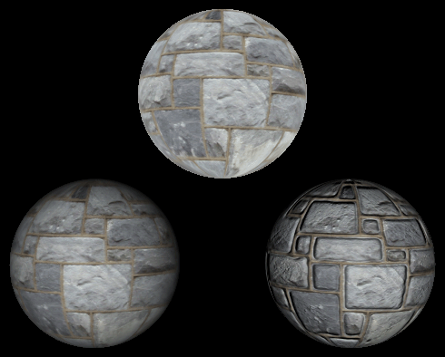
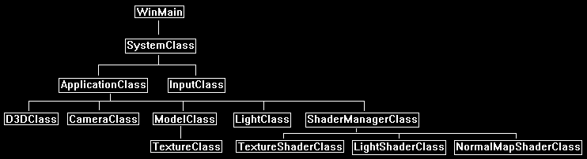

One of the issues that quickly arises in a graphics application that uses multiple shaders is how to manage them.
In the DirectX 11 tutorial series I generally don't show how manage them as it makes the tutorials less focused and harder to comprehend.
So, in this tutorial I will present one of the simpler methods for managing multiple shaders.
For this tutorial we will use a new class called ShaderManagerClass.
What this class does is it encapsulates the loading, unloading, and usage of all the shaders that the application requires.
In design patterns terminology this is usually referred to as a facade pattern as we are encapsulating and providing a singular simplified interface to a much larger body of code.
In this tutorial the ShaderManagerClass will contain the texture, light, and normal map shader objects.
It will load and unload all three of them, and it will also provide interfaces to have them render objects.
This allows us to create just a single ShaderManagerClass object and then pass a single pointer to the class object around the application so that rendering objects is just a single function call using the object pointer.
This is similar to how the D3DClass has been used in previous tutorials.
The following image shows a sphere being rendered with a texture shader, a light shader, and a normal map shader all at the same time through the use of the ShaderManagerClass:

Framework
Now that we have encapsulated all the shaders inside ShaderManagerClass our frame work will look like the following:

We will start the code section by examining the ShaderManagerClass.
Shadermanagerclass.h
////////////////////////////////////////////////////////////////////////////////
// Filename: shadermanagerclass.h
////////////////////////////////////////////////////////////////////////////////
#ifndef _SHADERMANAGERCLASS_H_
#define _SHADERMANAGERCLASS_H_
Here is where we include each shader class header file that we want to use in the application.
///////////////////////
// MY CLASS INCLUDES //
///////////////////////
#include "textureshaderclass.h"
#include "lightshaderclass.h"
#include "normalmapshaderclass.h"
////////////////////////////////////////////////////////////////////////////////
// Class name: ShaderManagerClass
////////////////////////////////////////////////////////////////////////////////
class ShaderManagerClass
{
public:
ShaderManagerClass();
ShaderManagerClass(const ShaderManagerClass&);
~ShaderManagerClass();
bool Initialize(ID3D11Device*, HWND);
void Shutdown();
We create a single render function for each shader that the ShaderManagerClass handles.
bool RenderTextureShader(ID3D11DeviceContext*, int, XMMATRIX, XMMATRIX, XMMATRIX, ID3D11ShaderResourceView*);
bool RenderLightShader(ID3D11DeviceContext*, int, XMMATRIX, XMMATRIX, XMMATRIX, ID3D11ShaderResourceView*, XMFLOAT3, XMFLOAT4);
bool RenderNormalMapShader(ID3D11DeviceContext*, int, XMMATRIX, XMMATRIX, XMMATRIX, ID3D11ShaderResourceView*, ID3D11ShaderResourceView*, XMFLOAT3, XMFLOAT4);
private:
The ShaderManagerClass contains a private class object for each shader type the application will be using.
TextureShaderClass* m_TextureShader;
LightShaderClass* m_LightShader;
NormalMapShaderClass* m_NormalMapShader;
};
#endif
Shadermanagerclass.cpp
////////////////////////////////////////////////////////////////////////////////
// Filename: shadermanagerclass.cpp
////////////////////////////////////////////////////////////////////////////////
#include "shadermanagerclass.h"
Initialize the private shader class objects to null in the class constructor.
ShaderManagerClass::ShaderManagerClass()
{
m_TextureShader = 0;
m_LightShader = 0;
m_NormalMapShader = 0;
}
ShaderManagerClass::ShaderManagerClass(const ShaderManagerClass& other)
{
}
ShaderManagerClass::~ShaderManagerClass()
{
}
bool ShaderManagerClass::Initialize(ID3D11Device* device, HWND hwnd)
{
bool result;
Create and initialize the texture shader object.
// Create and initialize the texture shader object.
m_TextureShader = new TextureShaderClass;
result = m_TextureShader->Initialize(device, hwnd);
if(!result)
{
return false;
}
Create and initialize the light shader object.
// Create and initialize the light shader object.
m_LightShader = new LightShaderClass;
result = m_LightShader->Initialize(device, hwnd);
if(!result)
{
return false;
}
Create and initialize the normal map shader object.
// Create and initialize the normal map shader object.
m_NormalMapShader = new NormalMapShaderClass;
result = m_NormalMapShader->Initialize(device, hwnd);
if(!result)
{
return false;
}
return true;
}
The Shutdown function releases all the shaders that were in use by the application.
void ShaderManagerClass::Shutdown()
{
// Release the normal map shader object.
if(m_NormalMapShader)
{
m_NormalMapShader->Shutdown();
delete m_NormalMapShader;
m_NormalMapShader = 0;
}
// Release the light shader object.
if(m_LightShader)
{
m_LightShader->Shutdown();
delete m_LightShader;
m_LightShader = 0;
}
// Release the texture shader object.
if(m_TextureShader)
{
m_TextureShader->Shutdown();
delete m_TextureShader;
m_TextureShader = 0;
}
return;
}
Here is where we create a specialized render function for each shader type that ShaderManagerClass uses.
In the application we can now just pass around a pointer to the ShaderManagerClass object and then make a call to one of the following functions to render any model with the desired shader.
bool ShaderManagerClass::RenderTextureShader(ID3D11DeviceContext* deviceContext, int indexCount, XMMATRIX worldMatrix, XMMATRIX viewMatrix, XMMATRIX projectionMatrix,
ID3D11ShaderResourceView* texture)
{
bool result;
result = m_TextureShader->Render(deviceContext, indexCount, worldMatrix, viewMatrix, projectionMatrix, texture);
if(!result)
{
return false;
}
return true;
}
bool ShaderManagerClass::RenderLightShader(ID3D11DeviceContext* deviceContext, int indexCount, XMMATRIX worldMatrix, XMMATRIX viewMatrix, XMMATRIX projectionMatrix,
ID3D11ShaderResourceView* texture, XMFLOAT3 lightDirection, XMFLOAT4 diffuseColor)
{
bool result;
result = m_LightShader->Render(deviceContext, indexCount, worldMatrix, viewMatrix, projectionMatrix, texture, lightDirection, diffuseColor);
if(!result)
{
return false;
}
return true;
}
bool ShaderManagerClass::RenderNormalMapShader(ID3D11DeviceContext* deviceContext, int indexCount, XMMATRIX worldMatrix, XMMATRIX viewMatrix, XMMATRIX projectionMatrix,
ID3D11ShaderResourceView* colorTexture, ID3D11ShaderResourceView* normalTexture, XMFLOAT3 lightDirection, XMFLOAT4 diffuseColor)
{
bool result;
result = m_NormalMapShader->Render(deviceContext, indexCount, worldMatrix, viewMatrix, projectionMatrix, colorTexture, normalTexture, lightDirection, diffuseColor);
if(!result)
{
return false;
}
return true;
}
Applicationclass.h
In the ApplicationClass we include just the header for the ShaderManagerClass instead of all the individual shader headers.
Likewise, we only need one ShaderManagerClass object.
////////////////////////////////////////////////////////////////////////////////
// Filename: applicationclass.h
////////////////////////////////////////////////////////////////////////////////
#ifndef _APPLICATIONCLASS_H_
#define _APPLICATIONCLASS_H_
///////////////////////
// MY CLASS INCLUDES //
///////////////////////
#include "d3dclass.h"
#include "inputclass.h"
#include "cameraclass.h"
#include "modelclass.h"
#include "lightclass.h"
#include "shadermanagerclass.h"
/////////////
// GLOBALS //
/////////////
const bool FULL_SCREEN = false;
const bool VSYNC_ENABLED = true;
const float SCREEN_DEPTH = 1000.0f;
const float SCREEN_NEAR = 0.3f;
////////////////////////////////////////////////////////////////////////////////
// Class name: ApplicationClass
////////////////////////////////////////////////////////////////////////////////
class ApplicationClass
{
public:
ApplicationClass();
ApplicationClass(const ApplicationClass&);
~ApplicationClass();
bool Initialize(int, int, HWND);
void Shutdown();
bool Frame(InputClass*);
private:
bool Render(float);
private:
D3DClass* m_Direct3D;
CameraClass* m_Camera;
ModelClass* m_Model;
LightClass* m_Light;
ShaderManagerClass* m_ShaderManager;
};
#endif
Applicationclass.cpp
////////////////////////////////////////////////////////////////////////////////
// Filename: applicationclass.cpp
////////////////////////////////////////////////////////////////////////////////
#include "applicationclass.h"
ApplicationClass::ApplicationClass()
{
m_Direct3D = 0;
m_Camera = 0;
m_Model = 0;
m_Light = 0;
m_ShaderManager = 0;
}
ApplicationClass::ApplicationClass(const ApplicationClass& other)
{
}
ApplicationClass::~ApplicationClass()
{
}
bool ApplicationClass::Initialize(int screenWidth, int screenHeight, HWND hwnd)
{
char modelFilename[128], textureFilename1[128], textureFilename2[128];
bool result;
// Create and initialize the Direct3D object.
m_Direct3D = new D3DClass;
result = m_Direct3D->Initialize(screenWidth, screenHeight, VSYNC_ENABLED, hwnd, FULL_SCREEN, SCREEN_DEPTH, SCREEN_NEAR);
if(!result)
{
MessageBox(hwnd, L"Could not initialize Direct3D", L"Error", MB_OK);
return false;
}
// Create and initialize the camera object.
m_Camera = new CameraClass;
Set the camera back a bit.
m_Camera->SetPosition(0.0f, 0.0f, -8.0f);
m_Camera->Render();
We will just load a single model of a sphere with the two textures it needs.
When we render, we will just render this model each time with the different shaders.
// Set the file name of the model.
strcpy_s(modelFilename, "../Engine/data/sphere.txt");
// Set the file name of the textures.
strcpy_s(textureFilename1, "../Engine/data/stone01.tga");
strcpy_s(textureFilename2, "../Engine/data/normal01.tga");
// Create and initialize the model object.
m_Model = new ModelClass;
result = m_Model->Initialize(m_Direct3D->GetDevice(), m_Direct3D->GetDeviceContext(), modelFilename, textureFilename1, textureFilename2);
if(!result)
{
return false;
}
// Create and initialize the light object.
m_Light = new LightClass;
m_Light->SetDiffuseColor(1.0f, 1.0f, 1.0f, 1.0f);
m_Light->SetDirection(0.0f, 0.0f, 1.0f);
We create and initialize the ShaderManagerClass object here.
// Create and initialize the normal map shader object.
m_ShaderManager = new ShaderManagerClass;
result = m_ShaderManager->Initialize(m_Direct3D->GetDevice(), hwnd);
if(!result)
{
return false;
}
return true;
}
void ApplicationClass::Shutdown()
{
The ShaderManagerClass object is released here in the Shutdown function.
// Release the shader manager object.
if(m_ShaderManager)
{
m_ShaderManager->Shutdown();
delete m_ShaderManager;
m_ShaderManager = 0;
}
// Release the light object.
if(m_Light)
{
delete m_Light;
m_Light = 0;
}
// Release the model object.
if(m_Model)
{
m_Model->Shutdown();
delete m_Model;
m_Model = 0;
}
// Release the camera object.
if(m_Camera)
{
delete m_Camera;
m_Camera = 0;
}
// Release the Direct3D object.
if(m_Direct3D)
{
m_Direct3D->Shutdown();
delete m_Direct3D;
m_Direct3D = 0;
}
return;
}
bool ApplicationClass::Frame(InputClass* Input)
{
static float rotation = 360.0f;
bool result;
// Check if the user pressed escape and wants to exit the application.
if(Input->IsEscapePressed())
{
return false;
}
// Update the rotation variable each frame.
rotation -= 0.0174532925f * 0.25f;
if(rotation <= 0.0f)
{
rotation += 360.0f;
}
// Render the graphics scene.
result = Render(rotation);
if(!result)
{
return false;
}
return true;
}
bool ApplicationClass::Render(float rotation)
{
XMMATRIX worldMatrix, viewMatrix, projectionMatrix, rotateMatrix, translateMatrix;
bool result;
// Clear the buffers to begin the scene.
m_Direct3D->BeginScene(0.0f, 0.0f, 0.0f, 1.0f);
// Get the world, view, and projection matrices from the camera and d3d objects.
m_Direct3D->GetWorldMatrix(worldMatrix);
m_Camera->GetViewMatrix(viewMatrix);
m_Direct3D->GetProjectionMatrix(projectionMatrix);
Render the first sphere model using the texture shader from the ShaderManagerClass object.
// Setup matrices.
rotateMatrix = XMMatrixRotationY(rotation);
translateMatrix = XMMatrixTranslation(0.0f, 1.0f, 0.0f);
worldMatrix = XMMatrixMultiply(rotateMatrix, translateMatrix);
// Render the model using the texture shader.
m_Model->Render(m_Direct3D->GetDeviceContext());
result = m_ShaderManager->RenderTextureShader(m_Direct3D->GetDeviceContext(), m_Model->GetIndexCount(), worldMatrix, viewMatrix, projectionMatrix,
m_Model->GetTexture(0));
if(!result)
{
return false;
}
Render the second sphere model using the light shader from the ShaderManagerClass object.
// Setup matrices.
rotateMatrix = XMMatrixRotationY(rotation);
translateMatrix = XMMatrixTranslation(-1.5f, -1.0f, 0.0f);
worldMatrix = XMMatrixMultiply(rotateMatrix, translateMatrix);
// Render the model using the light shader.
m_Model->Render(m_Direct3D->GetDeviceContext());
result = m_ShaderManager->RenderLightShader(m_Direct3D->GetDeviceContext(), m_Model->GetIndexCount(), worldMatrix, viewMatrix, projectionMatrix,
m_Model->GetTexture(0), m_Light->GetDirection(), m_Light->GetDiffuseColor());
if(!result)
{
return false;
}
Render the third sphere model using the normal map shader from the ShaderManagerClass object.
// Setup matrices.
rotateMatrix = XMMatrixRotationY(rotation);
translateMatrix = XMMatrixTranslation(1.5f, -1.0f, 0.0f);
worldMatrix = XMMatrixMultiply(rotateMatrix, translateMatrix);
// Render the model using the normal map shader.
m_Model->Render(m_Direct3D->GetDeviceContext());
result = m_ShaderManager->RenderNormalMapShader(m_Direct3D->GetDeviceContext(), m_Model->GetIndexCount(), worldMatrix, viewMatrix, projectionMatrix,
m_Model->GetTexture(0), m_Model->GetTexture(1), m_Light->GetDirection(), m_Light->GetDiffuseColor());
if(!result)
{
return false;
}
// Present the rendered scene to the screen.
m_Direct3D->EndScene();
return true;
}
Summary
Now we have a single class which encapsulates all the shading functionality that our graphics application will need.
To Do Exercises
1. Compile and run the code. You should see three spheres each shaded with a different shader. Press escape to quit.
2. Add another shader to the ShaderManagerClass and render a fourth sphere using that shader.
Source Code
Source Code and Data Files: dx11win10tut22_src.zip